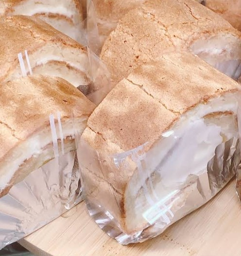
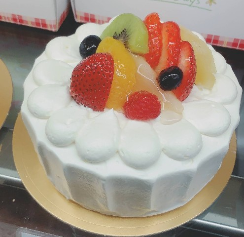
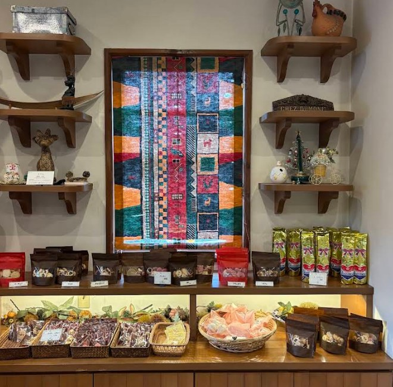
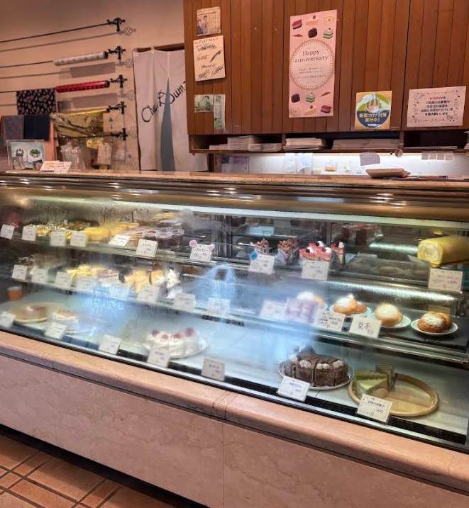
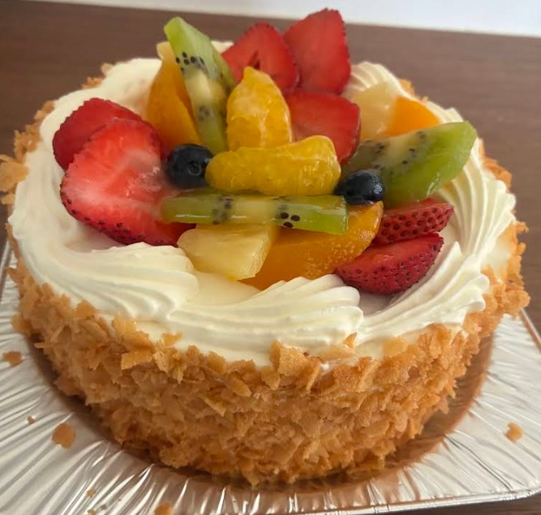

窯出しシュークリーム
注文を受けてからクリームを詰める、サクサク生地と濃厚カスタードの極上ハーモニー。当店の圧倒的一番人気です。
素材の声に耳を澄まし、
ひとつひとつ丁寧に焼き上げるお菓子たち。
あなたの日常に、特別な甘いひとときを。
最新情報はInstagramで発信しています
Instagramを見る
岐阜県瑞穂市で長年、多くのお客様に親しまれている「シェ・デュモン」。当店が大切にしているのは、日常のちょっとしたご褒美から特別な日のお祝いまで、どんなシーンにも寄り添えるお菓子作りです。
看板メニューである「シュークリーム」は、香ばしく焼き上げたサクサクの生地と、バニラビーンズが香る濃厚で上品なカスタードクリームの絶妙なバランスが特徴。お子様からご年配の方まで、幅広い世代にご支持いただいております。
木の温もりを感じるクラシックな店内には、季節のフルーツをふんだんに使った色鮮やかなケーキや、手土産に喜ばれる焼き菓子が並びます。スタッフの温かく丁寧な接客とともに、皆様のご来店を心よりお待ちしております。
新鮮な地元の卵や、香り高い高級バター、産地指定の生クリームなど、本当に美味しいと納得した素材だけを使用しています。
生地の仕込みから焼き上げ、デコレーションに至るまで、熟練のパティシエが一つひとつ丁寧に手作業で仕上げています。
お客様の特別な日を彩るお手伝いができるよう、商品選びのご相談など、笑顔で丁寧な接客を心掛けております。



「看板メニューのシュークリームは、サクサクの生地と甘さ控えめなクリームの相性が抜群で、何度食べても飽きない美味しさです。手土産に持っていくと必ず喜ばれます。」
- 30代 女性
「記念日や家族の誕生日のケーキはいつもこちらでお願いしています。見た目も華やかで美しく、スポンジもフワフワ。家族みんなが大好きな、間違いない味です。」
- 40代 男性
「スタッフの方の対応がとても丁寧で、いつも気持ちよく買い物ができます。焼き菓子の種類も豊富なので、予算に合わせたギフト選びにも重宝しています。」
- 50代 女性
| 店舗名 | シェ・デュモン（Chez Dumont） |
|---|---|
| 住所 | 〒501-0200 岐阜県瑞穂市（※Googleマップをご参照ください） |
| 営業時間 | 10:00 〜 19:00 ※売り切れ次第終了となる場合がございます。 |
| 定休日 | 水曜日（※祝日の場合は営業、翌日休み） |
| 駐車場 | 完備（店舗前および専用駐車場あり） |